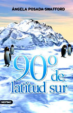

90º de latitud sur
Reseña por Jorge I. Zuluaga

Ver reseña en GoodReads (necesita cuenta)
Angela es definitivamente una de las autoras más empáticas que conozco.
Todos sus textos, tanto los artículos de prensa que escribe para diverso diarios, revistas y sitios en línea, así como sus amenos libros, parecen estar escritos para causar el máximo placer en sus lectores.
Podría decirse, en este mismo orden de ideas, que Angela es una escritora "complaciente" (lo que no parece en la literatura una "cualidad") aunque yo diría más bien que es una amorosa autora.
Este hermoso libro, y creo toda la colección de sus libros para "jóvenes" (de los cuáles es el primero y no será el último que leo) no es la excepción naturalmente.
Llegue a él después de leer, casi en sucesión, su más reciente libro "Hielo: bitácora de una expedicionaria antártica", un entretenido compendió de escritos sobre sus viajes antárticos (mi reseña aquí: https://www.goodreads.com/review/show...) y el clásico de la exploración "El peor viaje del mundo" de Aspley Cherry-Garrard (mi reseña aquí: https://www.goodreads.com/review/show...) que leí por la recomendación que encontré entre las páginas del libro de Ángela.
Después de leer el angustioso relato de aventuras de Aspley Cherry-Garrard (que fue clasificado por la National Geographic como uno de los 100 mejores libros de aventuras de la historia), no hay duda que "90 grados de latitud sur" es una divertida continuación, en pleno siglo XXI, de las aventuras de los pioneros de la exploración antártica de hace más de 100 años.
Muchas de las historias contenidas en el libro las he escuchado repetir una y otra vez a Angela (¡y nunca me canso de hacerlo!) cuando habla de sus propias aventuras en la Antártida, entre ella el primer viaje de una periodista latina a la base Admunsen-Scott en el polo sur. Por la misma razón, este libro de aventuras se me antoja en parte "autobiográfico" (bueno, en realidad es un capítulo de sus mucha aventuras por el mundo.)
Tanto el personaje de la dulce pero aguerrida tía Abi como de la curiosa e informada Isabel, se me antojan versiones literarias de la misma Ángela. Una buena manera de conocer en persona a la autora es a través de las aventuras de este particular grupo de personajes que protagonizan sus libros para "jóvenes".
El libro es fácil de leer, extremadamente entretenido y esta bien escrito. Muy recomendado para iniciar en la lectura a niños y jóvenes.
Me encanta que reproduce, al principio de cada capítulo, una buena parte del texto de Aspley Cherry-Garrard, con lo que espero deje con ganas de leer a quiénes no lo hayan descubierto todavía.
Angela logra un maravilloso equilibrio entre personajes de valor e inteligencia masculinos y femeninos que no he leído en otras historias. Las jóvenes podrán identificarse o admirar a Zeta la directora en jefe de la estación del polo sur o a Juana la joven que parece guiar las más emocionantes aventuras de sus compañeros, de la misma manera que los jóvenes encontrarán fascinantes y admirables los personajes de Klaus, el Doctor Pingüino e incluso de "Muón" el Sheldon Cooper del polo sur. Pero sin duda alguna, todos, niños y niñas, apreciaran a través de este libro y toda la colección a los científicos, sin importar su sexo.
En fin. Como siempre Angela lo ha logrado: me ha producido varias horas de placer releyendo sus aventuras en el polo pero esta vez personificada por entrañables personajes.
¡No dejen de leerlo! (y de leer toda su colección de libros para "jóvenes" entre 7 y 100 años)